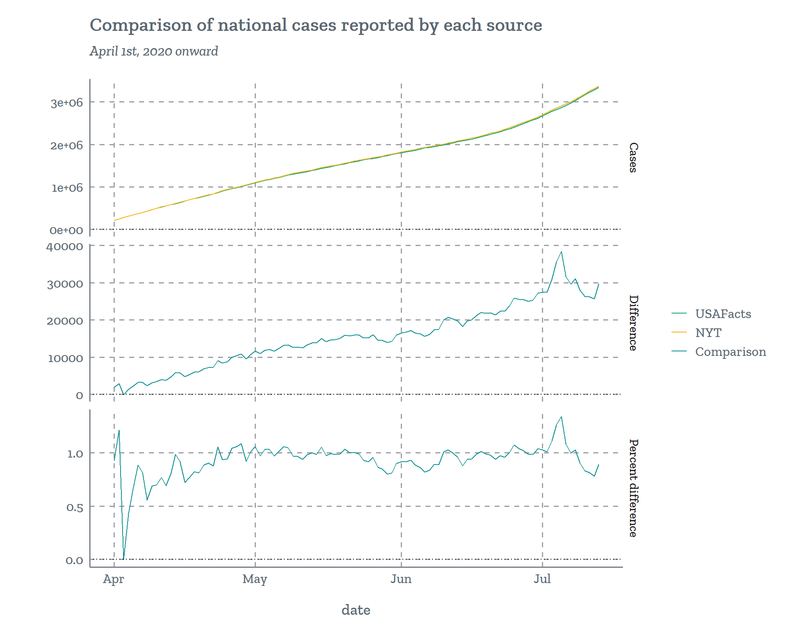
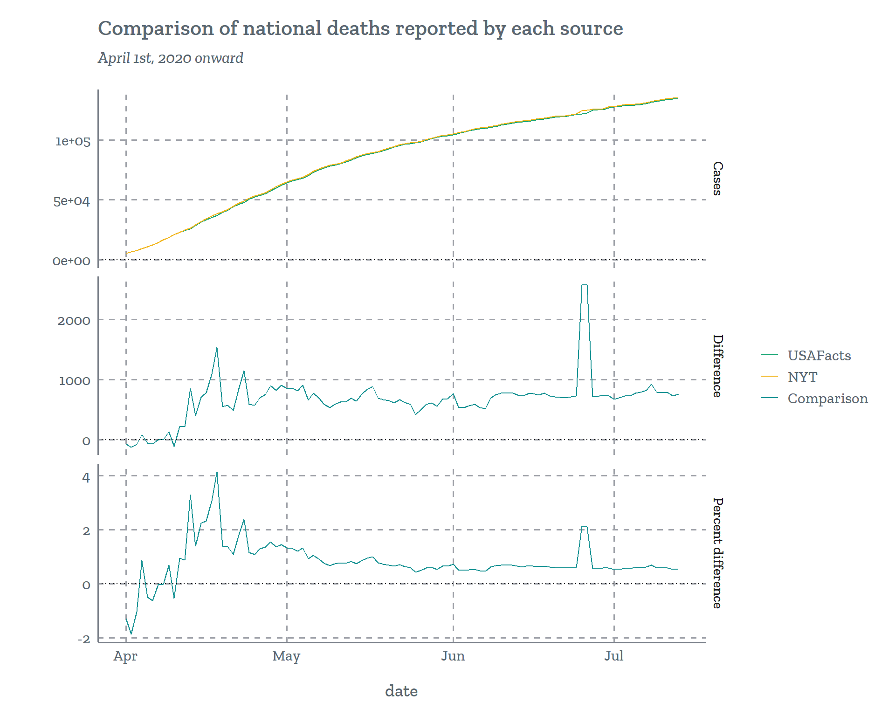
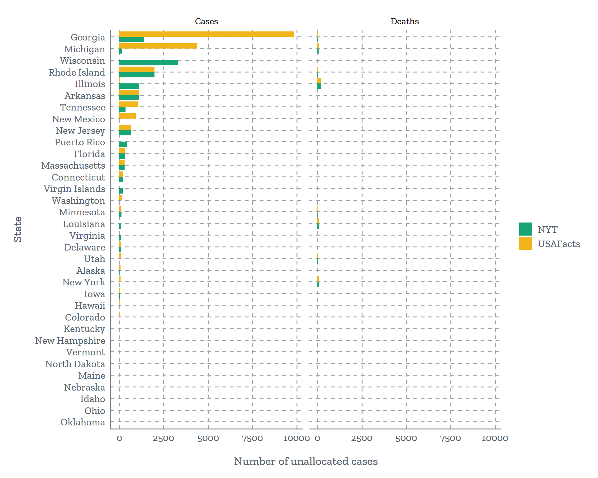
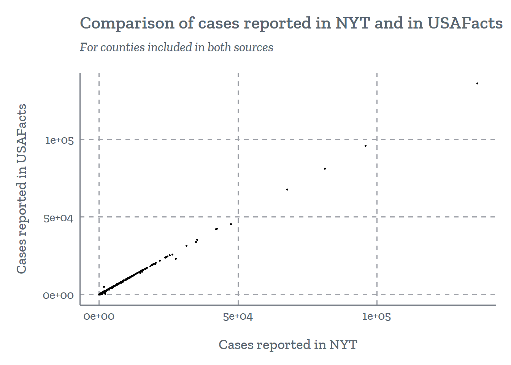
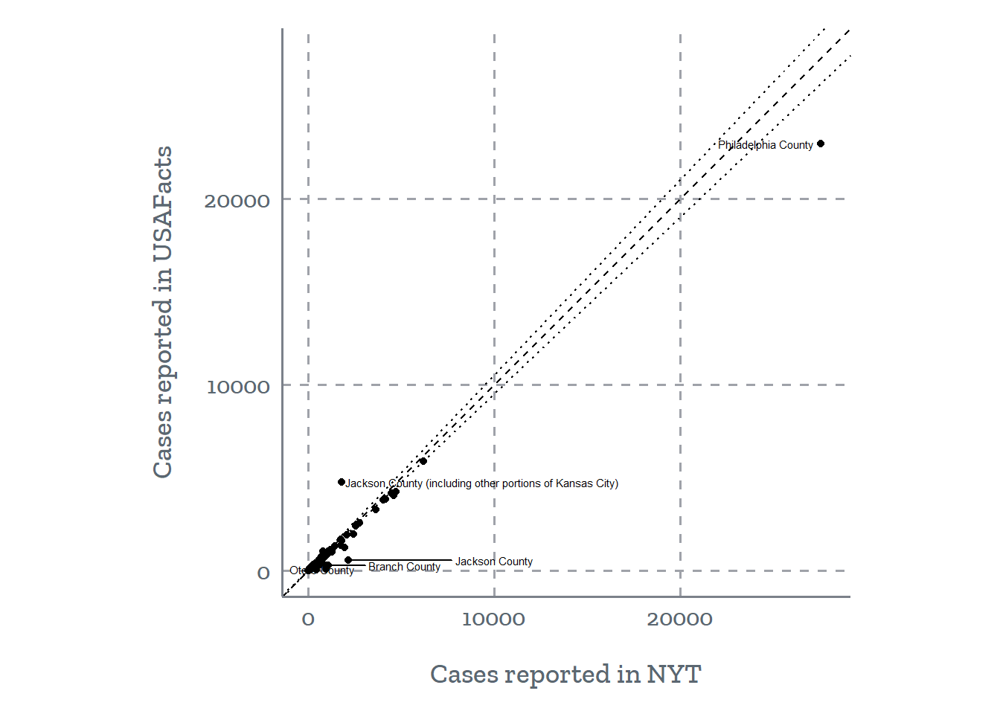
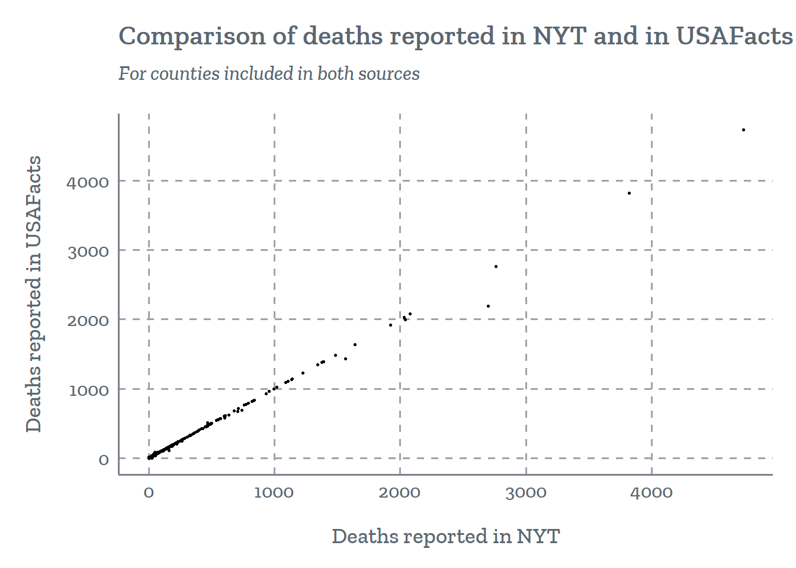
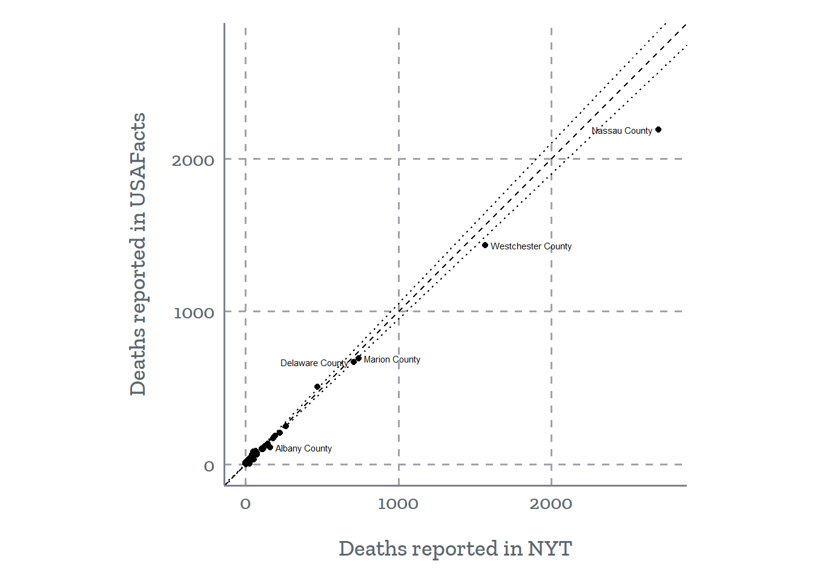

There are several national-level aggregations of county-level COVID case and death data that researchers have to choose from. Each source has its own data collection methods, which can result in variations in numbers across sources.
On this page, we explore to what extent the following two data sources for county-level cumulative counts of confirmed COVID-19 cases and deaths are comparable. In our comparison, we focus on cumulative case counts as of 7/13/2020 (data accessed on 7/14/2020).
New York Times (NYT): The New York times keeps maintains a data set reporting daily cumulative counts of COVID-19 cases and deaths.
USAFacts: USAFacts also maintains a data set reporting daily cumulative counts of COVID-19 cases and deaths.
The data for each of the two sources are gathered from state and local public health agencies, however there are some differences between the two sources in how the data is reported. This blog post reviews some of the major differences, for example:
Time of update: NYT is updated once daily around 8am EDT with case and death counts from the previous day. USAFacts is updated once daily around 12am PDT (3am EDT) for cases from the previous day. Because USAFacts is updated before NYT, USAFacts generally reports lower case and death counts than NYT for a given day.
Geographic exceptions: NYT reports cases for all five boroughs of New York city as a single area (“New York City”). USAFacts reports New York City cases separately for all five counties, though also has a category for “New York City Unallocated/Probable”. NYT reports all case for Kansas City in a single group (“Kansas City”). The case counts for the four counties that include parts of Kansas City represent only the parts of the counties that are outside of Kansas City. In the USAFacts data, all Kansas City cases are allocated to Jackson County.
Other differences: See the blog post linked above for more information on the differences between the data sources.
Date updated: 7/13/2020 (data downloaded: 7/14/2020)
The following plot shows daily cumulative case counts for each of the two data sources, as well as the difference in case counts (NYT-USAFacts) and percentage difference in case counts (NYT-USAFacts)/USAFacts over time (approximately 3,000 cases on 7/13). The difference in case counts between the two sources has grown proportionally with the number of cases.
While the case counts reported in the two sources are similar. NYT tends to report about 1% more cases than USAFacts.

The following plot shows daily cumulative death counts for each of the two data sources, as well as the difference in death counts (NYT-USAFacts) and percentage difference in death counts (NYT-USAFacts)/USAFacts over time.
While the death counts reported in the two sources are similar. NYT has tends to report about 1% more cases than USAFacts. The difference in death counts between the two sources has stayed relatively steady since early May.

Date updated: 7/13/2020 (data downloaded: 7/14/2020)
This plot shows only states where there are unallocated cases or deaths in either data source.

There are currently only a handful of such deaths, and no such cases
| County | State | Cases | Deaths |
|---|---|---|---|
| New York City Unallocated/Probable | NY | 0 | 37 |
Date updated: 7/13/2020 (data downloaded: 7/14/2020)
All county FIPS codes from the New York Times data are in the USAFacts data with the exception of FIPS codes corresponding to counties in Puerto Rico.
| State | # Counties in NYT but missing from USAFacts |
|---|---|
| Puerto Rico | 78 |
There are a few FIPs codes that appear in the USAFacts data but not in the NYT:
The Grand Princess cruise ship is included in USAFacts but not in NYT
USAFacts has a row for Russell county, KS whereas NYT has a single row for Kansas City
USAFacts has rows for each of five counties in New York City, whereas NYT has a single row for New York City
USA facts has a row for Martinsville City, while NYT does not
| State | County | FIPS | Cummulative cases | Earliest date | Latest date |
|---|---|---|---|---|---|
| CA | Grand Princess Cruise Ship | 06000 | 21 | 2020-03-07 | 2020-07-13 |
| NY | Bronx County | 36005 | 48377 | 2020-03-08 | 2020-07-13 |
| NY | Kings County | 36047 | 60815 | 2020-03-05 | 2020-07-13 |
| NY | New York County | 36061 | 29302 | 2020-03-02 | 2020-07-13 |
| NY | Queens County | 36081 | 66466 | 2020-03-07 | 2020-07-13 |
| NY | Richmond County | 36085 | 14341 | 2020-03-09 | 2020-07-13 |
| VA | Martinsville city | 51690 | 117 | 2020-04-28 | 2020-07-13 |
Date updated: 7/13/2020 (data downloaded: 7/14/2020)

Percentage difference is defined relative to USAFacts ([NYT-USAFacts]/USAFacts).

The following table is arranged in descending order of the absolute value of the difference between the two sources.
| State | County USAFacts | FIPS | NYT | USAFacts | Percent difference |
|---|---|---|---|---|---|
| PA | Philadelphia County | 42101 | 27575 | 22987 | 20% |
| MO | Jackson County (including other portions of Kansas City) | 29095 | 1781 | 4767 | -63% |
| MI | Jackson County | 26075 | 2163 | 555 | 290% |
| NM | Otero County | 35035 | 950 | 79 | 1102% |
| MI | Branch County | 26023 | 1062 | 269 | 295% |
| MI | Lenawee County | 26091 | 1013 | 283 | 258% |
| TX | Ector County | 48135 | 1964 | 1235 | 59% |
| TN | Davidson County | 47037 | 14702 | 13976 | 5% |
| WA | Snohomish County | 53061 | 4613 | 4033 | 14% |
| MI | Washtenaw County | 26161 | 2433 | 1938 | 26% |
| CA | Ventura County | 06111 | 4724 | 4246 | 11% |
| CA | Lassen County | 06035 | 428 | 35 | 1123% |
| MO | St. Charles County | 29183 | 1760 | 1371 | 28% |
| WA | Pierce County | 53053 | 3634 | 3257 | 12% |
| TX | Galveston County | 48167 | 6201 | 5873 | 6% |
| ID | Ada County | 16001 | 4472 | 4146 | 8% |
| TX | Cameron County | 48061 | 4175 | 3854 | 8% |
| MI | Lapeer County | 26087 | 632 | 325 | 94% |
| TX | Comal County | 48091 | 1282 | 977 | 31% |
| IN | Shelby County | 18145 | 701 | 460 | 52% |
| MO | Jasper County | 29097 | 778 | 1019 | -24% |
| TX | Williamson County | 48491 | 4042 | 3810 | 6% |
| CA | Santa Barbara County | 06083 | 4353 | 4140 | 5% |
| TX | Val Verde County | 48465 | 699 | 503 | 39% |
| TX | Victoria County | 48469 | 1795 | 1599 | 12% |
| IN | Wayne County | 18177 | 354 | 159 | 123% |
| WA | Clark County | 53011 | 1272 | 1078 | 18% |
| TX | McLennan County | 48309 | 2744 | 2557 | 7% |
| MO | Jefferson County | 29099 | 769 | 594 | 30% |
| MO | McDonald County | 29119 | 887 | 712 | 25% |
| WA | Benton County | 53005 | 2557 | 2387 | 7% |
| MO | Boone County | 29019 | 764 | 595 | 28% |
| KY | Fayette County | 21067 | 2076 | 1912 | 9% |
| TX | Smith County | 48423 | 1442 | 1299 | 11% |
| WA | Franklin County | 53021 | 2600 | 2465 | 6% |
| CA | Madera County | 06039 | 1025 | 893 | 15% |
| TX | Titus County | 48449 | 1016 | 887 | 14% |
| IN | Grant County | 18053 | 449 | 322 | 39% |
| IL | St. Clair County | 17163 | 2471 | 2347 | 5% |
| WI | Rock County | 55105 | 1156 | 1041 | 11% |
| MO | Greene County | 29077 | 577 | 469 | 23% |
| GA | Richmond County | 13245 | 1759 | 1656 | 6% |
| NC | Dare County | 37055 | 215 | 114 | 89% |
| TX | Gregg County | 48183 | 863 | 762 | 13% |
| TX | Navarro County | 48349 | 541 | 446 | 21% |
| TX | Taylor County | 48441 | 844 | 750 | 12% |
| TX | Midland County | 48329 | 1194 | 1104 | 8% |
| AK | Municipality of Anchorage | 02020 | 812 | 740 | 10% |
| TX | Brown County | 48049 | 237 | 171 | 39% |
| MI | Berrien County | 26021 | 1084 | 1019 | 6% |
| MO | Cass County | 29037 | 267 | 207 | 29% |
| MO | Johnson County | 29101 | 309 | 249 | 24% |
| TX | Randall County | 48381 | 1105 | 1045 | 6% |
| KY | Casey County | 21045 | 98 | 41 | 139% |
| NJ | Hunterdon County | 34019 | 1150 | 1094 | 5% |
| IN | Fayette County | 18041 | 161 | 108 | 49% |
| MI | Livingston County | 26093 | 666 | 618 | 8% |
| MT | Gallatin County | 30031 | 455 | 408 | 12% |
| VA | Portsmouth City | 51740 | 714 | 761 | -6% |
| KY | Christian County | 21047 | 343 | 297 | 16% |
| KY | Ohio County | 21183 | 265 | 221 | 20% |
| NM | Torrance County | 35057 | 92 | 49 | 88% |
| MO | Cole County | 29051 | 151 | 111 | 36% |
| VA | Suffolk City | 51800 | 573 | 612 | -6% |
| ID | Bannock County | 16005 | 179 | 141 | 27% |
| TX | Zavala County | 48507 | 96 | 60 | 60% |
| MO | Warren County | 29219 | 92 | 57 | 61% |
| TX | Rockwall County | 48397 | 467 | 433 | 8% |
| TX | Wichita County | 48485 | 636 | 604 | 5% |
| WI | Ozaukee County | 55089 | 343 | 315 | 9% |
| ID | Bingham County | 16011 | 105 | 78 | 35% |
| IN | Randolph County | 18135 | 107 | 80 | 34% |
| IN | Rush County | 18139 | 87 | 62 | 40% |
| MO | Christian County | 29043 | 102 | 77 | 32% |
| VA | Charlottesville City | 51540 | 285 | 310 | -8% |
| ID | Bonneville County | 16019 | 221 | 197 | 12% |
| NV | Elko County | 32007 | 267 | 244 | 9% |
| AK | Kenai Peninsula Borough | 02122 | 225 | 203 | 11% |
| AK | Fairbanks North Star Borough | 02090 | 277 | 255 | 9% |
| KS | Saline County | 20169 | 241 | 220 | 10% |
| WA | Thurston County | 53067 | 397 | 376 | 6% |
| MO | St. Francois County | 29187 | 187 | 167 | 12% |
| AK | Southeast Fairbanks Census Area | 02240 | 22 | 3 | 633% |
| KY | Pulaski County | 21199 | 146 | 127 | 15% |
| IN | Union County | 18161 | 32 | 14 | 129% |
| KY | Adair County | 21001 | 160 | 142 | 13% |
| IN | Wells County | 18179 | 100 | 83 | 20% |
| IN | Decatur County | 18031 | 274 | 257 | 7% |
| MO | Pettis County | 29159 | 172 | 156 | 10% |
| KY | Taylor County | 21217 | 67 | 52 | 29% |
| AK | Nome Census Area | 02180 | 18 | 5 | 260% |
| AK | Bethel Census Area | 02050 | 18 | 6 | 200% |
| MI | Manistee County | 26101 | 41 | 29 | 41% |
| MT | Missoula County | 30063 | 138 | 126 | 10% |
| AK | Yukon-Koyukuk Census Area | 02290 | 13 | 2 | 550% |
| AK | Ketchikan Gateway Borough | 02130 | 32 | 21 | 52% |
| KS | Bourbon County | 20011 | 54 | 43 | 26% |
| KS | Grant County | 20067 | 66 | 55 | 20% |
| KY | Russell County | 21207 | 73 | 62 | 18% |
| MI | Otsego County | 26137 | 136 | 125 | 9% |
| IN | Perry County | 18123 | 162 | 151 | 7% |
| KY | Wayne County | 21231 | 30 | 20 | 50% |
| CA | Mendocino County | 06045 | 146 | 136 | 7% |
| CA | Glenn County | 06021 | 166 | 176 | -6% |
| AK | Kodiak Island Borough | 02150 | 12 | 3 | 300% |
| CA | Humboldt County | 06023 | 174 | 165 | 6% |
| NY | Essex County | 36031 | 59 | 51 | 16% |
| MI | Grand Traverse County | 26055 | 98 | 90 | 9% |
| MO | Adair County | 29001 | 108 | 100 | 8% |
| VA | Franklin County | 51067 | 106 | 114 | -7% |
| MT | Big Horn County | 30003 | 119 | 127 | -6% |
| IN | Franklin County | 18047 | 136 | 128 | 6% |
| MO | Platte County | 29165 | 164 | 156 | 5% |
| AK | Sitka City and Borough | 02220 | 18 | 11 | 64% |
| WA | Whitman County | 53075 | 52 | 45 | 16% |
| VA | Wise County | 51195 | 40 | 47 | -15% |
| ID | Madison County | 16065 | 76 | 69 | 10% |
| ID | Bonner County | 16017 | 78 | 71 | 10% |
| VA | Gloucester County | 51073 | 69 | 76 | -9% |
| KY | Edmonson County | 21061 | 84 | 77 | 9% |
| KS | Graham County | 20065 | 13 | 7 | 86% |
| KY | Cumberland County | 21057 | 13 | 7 | 86% |
| KS | Republic County | 20157 | 21 | 15 | 40% |
| KY | Meade County | 21163 | 39 | 33 | 18% |
| AK | City and Borough of Juneau | 02110 | 57 | 51 | 12% |
| MO | Moniteau County | 29135 | 72 | 66 | 9% |
| ID | Elmore County | 16039 | 103 | 97 | 6% |
| MI | Gratiot County | 26057 | 113 | 107 | 6% |
| AK | Wrangell City and Borough | 02275 | 8 | 3 | 167% |
| IN | Parke County | 18121 | 33 | 28 | 18% |
| ID | Jefferson County | 16051 | 36 | 31 | 16% |
| IN | Jay County | 18075 | 77 | 72 | 7% |
| VA | Powhatan County | 51145 | 92 | 97 | -5% |
| AK | Haines Borough | 02100 | 6 | 2 | 200% |
| AK | Petersburg Census Area | 02195 | 8 | 4 | 100% |
| KY | Green County | 21087 | 14 | 10 | 40% |
| KY | Larue County | 21123 | 23 | 19 | 21% |
| VA | Lancaster County | 51103 | 16 | 20 | -20% |
| ID | Teton County | 16081 | 37 | 33 | 12% |
| IN | Blackford County | 18009 | 44 | 40 | 10% |
| VA | Buchanan County | 51027 | 42 | 46 | -9% |
| VA | Patrick County | 51141 | 48 | 52 | -8% |
| VA | Campbell County | 51031 | 66 | 70 | -6% |
| AK | Northwest Arctic Borough | 02188 | 7 | 4 | 75% |
| CA | Plumas County | 06063 | 14 | 11 | 27% |
| ID | Caribou County | 16029 | 20 | 17 | 18% |
| UT | Grand County | 49019 | 23 | 26 | -12% |
| VA | Russell County | 51167 | 23 | 26 | -12% |
| MI | Charlevoix County | 26029 | 35 | 32 | 9% |
| VA | Tazewell County | 51185 | 30 | 33 | -9% |
| MT | Ravalli County | 30081 | 44 | 47 | -6% |
| KY | Hart County | 21099 | 51 | 48 | 6% |
| KS | Cherokee County | 20021 | 57 | 54 | 6% |
| MI | Wexford County | 26165 | 57 | 54 | 6% |
| GA | Wheeler County | 13309 | 60 | 57 | 5% |
| IN | Spencer County | 18147 | 62 | 59 | 5% |
| ID | Bear Lake County | 16007 | 4 | 2 | 100% |
| KS | Russell County | 20167 | 4 | 2 | 100% |
| AK | North Slope Borough | 02185 | 6 | 4 | 50% |
| KS | Allen County | 20001 | 8 | 6 | 33% |
| ID | Idaho County | 16049 | 13 | 11 | 18% |
| ID | Power County | 16077 | 22 | 20 | 10% |
| UT | Carbon County | 49007 | 19 | 21 | -10% |
| VA | Surry County | 51181 | 19 | 21 | -10% |
| IA | Appanoose County | 19007 | 24 | 22 | 9% |
| VA | Lee County | 51105 | 20 | 22 | -9% |
| ID | Valley County | 16085 | 26 | 24 | 8% |
| UT | Morgan County | 49029 | 32 | 30 | 7% |
| VA | King and Queen County | 51097 | 28 | 30 | -7% |
| GA | Warren County | 13301 | 34 | 32 | 6% |
| ID | Franklin County | 16041 | 34 | 32 | 6% |
| IN | Switzerland County | 18155 | 34 | 32 | 6% |
| CA | Inyo County | 06027 | 35 | 37 | -5% |
| KS | Logan County | 20109 | 2 | 1 | 100% |
| AK | Prince of Wales-Hyder Census Area | 02198 | 3 | 2 | 50% |
| CA | Alpine County | 06003 | 1 | 2 | -50% |
| CA | Trinity County | 06105 | 3 | 2 | 50% |
| MI | Luce County | 26095 | 4 | 3 | 33% |
| MT | Fergus County | 30027 | 2 | 3 | -33% |
| ME | Washington County | 23029 | 5 | 4 | 25% |
| ID | Clearwater County | 16035 | 6 | 5 | 20% |
| KS | Chase County | 20017 | 6 | 5 | 20% |
| ID | Oneida County | 16071 | 8 | 7 | 14% |
| MT | Deer Lodge County | 30023 | 6 | 7 | -14% |
| WV | Tucker County | 54093 | 6 | 7 | -14% |
| ID | Shoshone County | 16079 | 9 | 8 | 12% |
| ID | Boise County | 16015 | 10 | 9 | 11% |
| KS | Rice County | 20159 | 10 | 9 | 11% |
| KS | Woodson County | 20207 | 10 | 9 | 11% |
| MT | Dawson County | 30021 | 8 | 9 | -11% |
| UT | Emery County | 49015 | 9 | 10 | -10% |
| MT | Jefferson County | 30043 | 10 | 11 | -9% |
| WY | Hot Springs County | 56017 | 13 | 12 | 8% |
| VA | Bristol city | 51520 | 13 | 14 | -7% |
| IN | Warren County | 18171 | 16 | 15 | 7% |
| KY | McCreary County | 21147 | 19 | 18 | 6% |
| MT | Park County | 30067 | 17 | 18 | -6% |
| VA | Radford city | 51750 | 17 | 18 | -6% |
Date updated: 7/13/2020 (data downloaded: 7/14/2020)

Percentage difference is defined relative to USAFacts ([NYT-USAFacts]/USAFacts).

The following table is arranged in descending order of the absolute value of the difference between the two sources.
| State | County USAFacts | FIPS | NYT | USAFacts | Percent difference |
|---|---|---|---|---|---|
| NY | Nassau County | 36059 | 2701 | 2190 | 23% |
| NY | Westchester County | 36119 | 1567 | 1435 | 9% |
| NY | Albany County | 36001 | 161 | 109 | 48% |
| IN | Marion County | 18097 | 739 | 693 | 7% |
| PA | Delaware County | 42045 | 709 | 668 | 6% |
| NY | Rockland County | 36087 | 469 | 506 | -7% |
| NY | Ulster County | 36111 | 49 | 81 | -40% |
| MI | Branch County | 26023 | 25 | 2 | 1150% |
| MI | Jackson County | 26075 | 54 | 32 | 69% |
| NY | Niagara County | 36063 | 67 | 85 | -21% |
| KY | Jefferson County | 21111 | 224 | 206 | 9% |
| MO | Jackson County (including other portions of Kansas City) | 29095 | 44 | 61 | -28% |
| IN | Hendricks County | 18063 | 116 | 100 | 16% |
| NY | Monroe County | 36055 | 264 | 248 | 6% |
| IN | Lake County | 18089 | 265 | 249 | 6% |
| NY | Orleans County | 36073 | 41 | 55 | -26% |
| NY | Onondaga County | 36067 | 183 | 169 | 8% |
| TX | Bowie County | 48037 | 28 | 16 | 75% |
| TX | Bexar County | 48029 | 195 | 184 | 6% |
| MO | Jasper County | 29097 | 1 | 11 | -91% |
| NY | Saratoga County | 36091 | 5 | 15 | -67% |
| NY | Steuben County | 36101 | 19 | 29 | -34% |
| NC | Buncombe County | 37021 | 41 | 31 | 32% |
| CA | Marin County | 06041 | 28 | 38 | -26% |
| IN | Madison County | 18095 | 74 | 64 | 16% |
| MI | Washtenaw County | 26161 | 118 | 108 | 9% |
| IN | Allen County | 18003 | 144 | 134 | 8% |
| WA | Yakima County | 53077 | 190 | 180 | 6% |
| NY | Greene County | 36039 | 5 | 13 | -62% |
| NY | Fulton County | 36035 | 18 | 26 | -31% |
| IN | Johnson County | 18081 | 126 | 118 | 7% |
| NY | Dutchess County | 36027 | 160 | 152 | 5% |
| MO | Clay County | 29047 | 20 | 13 | 54% |
| IN | Shelby County | 18145 | 32 | 25 | 28% |
| MI | Lapeer County | 26087 | 39 | 32 | 22% |
| IN | Clark County | 18019 | 51 | 44 | 16% |
| NE | Douglas County | 31055 | 106 | 100 | 6% |
| IN | Hamilton County | 18057 | 107 | 101 | 6% |
| TX | Ector County | 48135 | 19 | 14 | 36% |
| NY | Rensselaer County | 36083 | 38 | 33 | 15% |
| NY | Sullivan County | 36105 | 31 | 36 | -14% |
| IN | St. Joseph County | 18141 | 74 | 69 | 7% |
| MI | Lenawee County | 26091 | 15 | 11 | 36% |
| KY | Logan County | 21141 | 17 | 13 | 31% |
| NC | Union County | 37179 | 30 | 26 | 15% |
| NY | Columbia County | 36021 | 43 | 47 | -8% |
| TX | Nueces County | 48355 | 58 | 54 | 7% |
| IN | Elkhart County | 18039 | 64 | 60 | 7% |
| WA | Thurston County | 53067 | 8 | 5 | 60% |
| NY | Chenango County | 36017 | 3 | 6 | -50% |
| NY | Madison County | 36053 | 6 | 9 | -33% |
| TN | Knox County | 47093 | 13 | 10 | 30% |
| TX | Gregg County | 48183 | 16 | 13 | 23% |
| NY | Washington County | 36115 | 11 | 14 | -21% |
| VA | Rockingham County | 51165 | 12 | 15 | -20% |
| IN | Grant County | 18053 | 29 | 26 | 12% |
| IN | Morgan County | 18109 | 34 | 31 | 10% |
| IN | Decatur County | 18031 | 35 | 32 | 9% |
| IN | Greene County | 18055 | 35 | 32 | 9% |
| NC | Johnston County | 37101 | 38 | 35 | 9% |
| NE | Dakota County | 31043 | 39 | 36 | 8% |
| WA | Whatcom County | 53073 | 39 | 36 | 8% |
| TX | Webb County | 48479 | 46 | 43 | 7% |
| IN | Boone County | 18011 | 47 | 44 | 7% |
| IN | Bartholomew County | 18005 | 48 | 45 | 7% |
| IN | Howard County | 18067 | 61 | 58 | 5% |
| KY | Casey County | 21045 | 3 | 1 | 200% |
| AZ | Graham County | 04009 | 4 | 2 | 100% |
| NY | Chemung County | 36015 | 5 | 3 | 67% |
| NY | Herkimer County | 36043 | 1 | 3 | -67% |
| NY | Otsego County | 36077 | 6 | 4 | 50% |
| RI | Newport County | 44005 | 6 | 4 | 50% |
| NY | Wyoming County | 36121 | 3 | 5 | -40% |
| AK | Municipality of Anchorage | 02020 | 8 | 6 | 33% |
| NC | Brunswick County | 37019 | 10 | 8 | 25% |
| NC | Rutherford County | 37161 | 11 | 9 | 22% |
| TX | Victoria County | 48469 | 12 | 10 | 20% |
| IN | Jennings County | 18079 | 14 | 12 | 17% |
| SC | Lancaster County | 45057 | 15 | 13 | 15% |
| IN | Daviess County | 18027 | 19 | 17 | 12% |
| TX | McLennan County | 48309 | 19 | 17 | 12% |
| TX | Midland County | 48329 | 21 | 19 | 10% |
| IN | Harrison County | 18061 | 24 | 22 | 9% |
| IN | Orange County | 18117 | 25 | 23 | 9% |
| IN | Monroe County | 18105 | 30 | 28 | 7% |
| AZ | Santa Cruz County | 04023 | 31 | 29 | 7% |
| IN | Warrick County | 18173 | 31 | 29 | 7% |
| KY | Hopkins County | 21107 | 35 | 33 | 6% |
| NY | Schenectady County | 36093 | 34 | 36 | -6% |
| IN | Porter County | 18127 | 40 | 38 | 5% |
| AK | Matanuska-Susitna Borough | 02170 | 2 | 1 | 100% |
| IN | Adams County | 18001 | 2 | 1 | 100% |
| IN | Tipton County | 18159 | 2 | 1 | 100% |
| MO | Johnson County | 29101 | 2 | 1 | 100% |
| MO | Pettis County | 29159 | 2 | 1 | 100% |
| SC | Calhoun County | 45017 | 2 | 1 | 100% |
| TX | Jasper County | 48241 | 2 | 1 | 100% |
| AK | Kenai Peninsula Borough | 02122 | 1 | 2 | -50% |
| IL | Montgomery County | 17135 | 1 | 2 | -50% |
| KS | Saline County | 20169 | 3 | 2 | 50% |
| MO | Boone County | 29019 | 3 | 2 | 50% |
| NY | Cayuga County | 36011 | 1 | 2 | -50% |
| NY | Wayne County | 36117 | 1 | 2 | -50% |
| IN | Clinton County | 18023 | 4 | 3 | 33% |
| IN | Jackson County | 18071 | 4 | 3 | 33% |
| IN | Starke County | 18149 | 4 | 3 | 33% |
| KY | Henderson County | 21101 | 4 | 3 | 33% |
| NE | Gage County | 31067 | 4 | 3 | 33% |
| NY | Chautauqua County | 36013 | 4 | 3 | 33% |
| VA | Powhatan County | 51145 | 2 | 3 | -33% |
| IL | Christian County | 17021 | 5 | 4 | 25% |
| IL | Ogle County | 17141 | 5 | 4 | 25% |
| IN | DeKalb County | 18033 | 5 | 4 | 25% |
| IN | Kosciusko County | 18085 | 5 | 4 | 25% |
| NY | Montgomery County | 36057 | 5 | 4 | 25% |
| VA | Richmond County | 51159 | 6 | 5 | 20% |
| NY | Cattaraugus County | 36009 | 5 | 6 | -17% |
| IA | Story County | 19169 | 8 | 7 | 14% |
| TX | Smith County | 48423 | 8 | 7 | 14% |
| WA | Chelan County | 53007 | 8 | 7 | 14% |
| IN | Franklin County | 18047 | 9 | 8 | 12% |
| IN | Vigo County | 18167 | 9 | 8 | 12% |
| MO | Cass County | 29037 | 9 | 8 | 12% |
| WA | Grant County | 53025 | 7 | 8 | -12% |
| IN | Cass County | 18017 | 10 | 9 | 11% |
| IN | Scott County | 18143 | 10 | 9 | 11% |
| IN | Tippecanoe County | 18157 | 10 | 9 | 11% |
| IN | Newton County | 18111 | 11 | 10 | 10% |
| IN | Perry County | 18123 | 11 | 10 | 10% |
| VA | Carroll County | 51035 | 9 | 10 | -10% |
| VA | Southampton County | 51175 | 10 | 11 | -9% |
| WA | Island County | 53029 | 12 | 11 | 9% |
| NE | Hamilton County | 31081 | 13 | 12 | 8% |
| SC | Aiken County | 45003 | 13 | 12 | 8% |
| UT | Weber County | 49057 | 15 | 14 | 7% |
| TX | Rockwall County | 48397 | 17 | 16 | 6% |
| WI | Ozaukee County | 55089 | 17 | 16 | 6% |